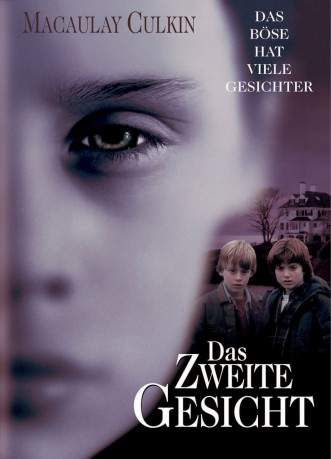

#10186 Das Zweite Gesicht
Alternativ: The Good Son (Englischer Titel)
 
 IMDB-Wertung: 6.4 / 10
IMDB-Wertung: 6.4 / 10  Metascore: 0
Metascore: 0 
Auf den ersten Blick wirkt der kleine Henry Eavens wie ein ganz normaler, liebenswerter Junge. Seine Eltern kennen ihn als liebevollen Sohn und umsichtigen Bruder, der seine kleine Schwester über alles liebt. Doch hinter seinen Engelsgesicht verbirgt sich eine diabolische, mordlüsterne Seele, die immer dann zum Vorschein kommt, wenn die Eltern nicht hinsehen. Wenn seine Familie wüßte, wie sich ihr kleiner Liebling amüsiert und welche abartigen Spiele er spielt, würde sie das kalte Grauen packen. Mark Evans, Henrys Cousin dagegen, der nach dem Tod seiner Eltern bei Henrys Familie wohnt, begreift schon bald, daß sich hinter dem zarten Äußeren seines Cousins das zweite Gesicht des Bösen verbirgt. Er versucht sich seinem diabolischen Cousin entgegenzustellen und riskiert mehr als nur sein junges Leben.
Jahr: 1993
Dauer: 86 Minuten
FSK: 16
Land: USA Studio: Twentieth Century FoxTonspuren:
Untertitel:
Auflösung: 1080p (1920x1040) Größe: 6707 MB
Genre: Thriller, Horror, Drama
Regisseur: Joseph Ruben
Drehbuch: Ian McEwan
Soundtrack: Elmer Bernstein
Darsteller:
 Macaulay Culkin als Henry
Macaulay Culkin als Henry Elijah Wood als Mark
Elijah Wood als Mark Wendy Crewson als Susan
Wendy Crewson als Susan David Morse als Jack
David Morse als Jack- Daniel Hugh Kelly als Wallace
- Ashley Crow als Janice
- Mark Stefanich als Ice Man
 Rory Culkin als Richard in Picture
Rory Culkin als Richard in Picture- Dale Resteghini als Hockey Player (uncredited)
- Jacqueline Brookes als Alice
- Quinn Culkin als Connie
- Guy Strauss als Arizona Doctor
- Keith Brava als Doctor in Blackport
- Jerem Goodwin als Factory Worker
- Andria Hall als Woman Reporter
- Bobby Huber als Axe Man
- Susan Hopper als Woman at Rescue
- Christopher C. Murphy als Young Man Next to Swing Set at Park (uncredited)
Datei: X:\1993\Zweite Gesicht, Das (1993, FSK16, 1920x1040).mkv seit 18.12.2018
Festplatte: HD 1992-1995
 Es gibt insgesamt 68 Filme in der Gruppe '1993'
Es gibt insgesamt 68 Filme in der Gruppe '1993'